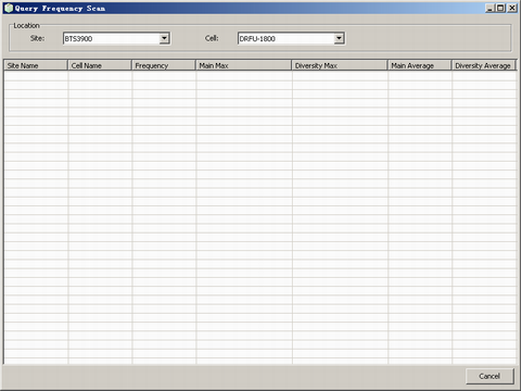

This describes how to query the maximum and average values of the main level and diversity level in a frequency scan period.
Prerequisites
- The LMT runs normally.
- The communication between the LMT and the BSC is normal.
- The Configure Frequency Scan function of the cell is enabled.
Context
Each carrier has two RX ports: carrier main and carrier diversity. The main level indicates the uplink signal level of the main carrier and the diversity level indicates the uplink signal level of the diversity carrier.
There are two
methods of querying frequency scan. The results are different if you query the frequency scan through different methods.
- Main Max , Diversity Max , Main Average and Diverse Average: The LMT can query the Main/Diversity maximum value and Main/Diversity average value in a frequency scan
period, and calculate the average value of Main/Diversity level.
- Max and Average: The main level and diversity level are unstable. The maximum value and average value of the main level and diversity level can be optimized through specified algorithm. Some BTSs support
the algorithm. You can view which uplink frequency scan method the BTS supports by querying the Uplink Frequency Scan Result Type. For details, refer to Querying BTS Attributes.
Procedure
- Through GUI
- Choose .
- Set the parameters in the Location area. The results are displayed, as shown in Figure 1.
Figure 1 Querying frequency scan

- Through MML
- Run the LST CELLSOFT command on the LMT to query cell software parameters.
Copyright © Huawei Technologies Co., Ltd.